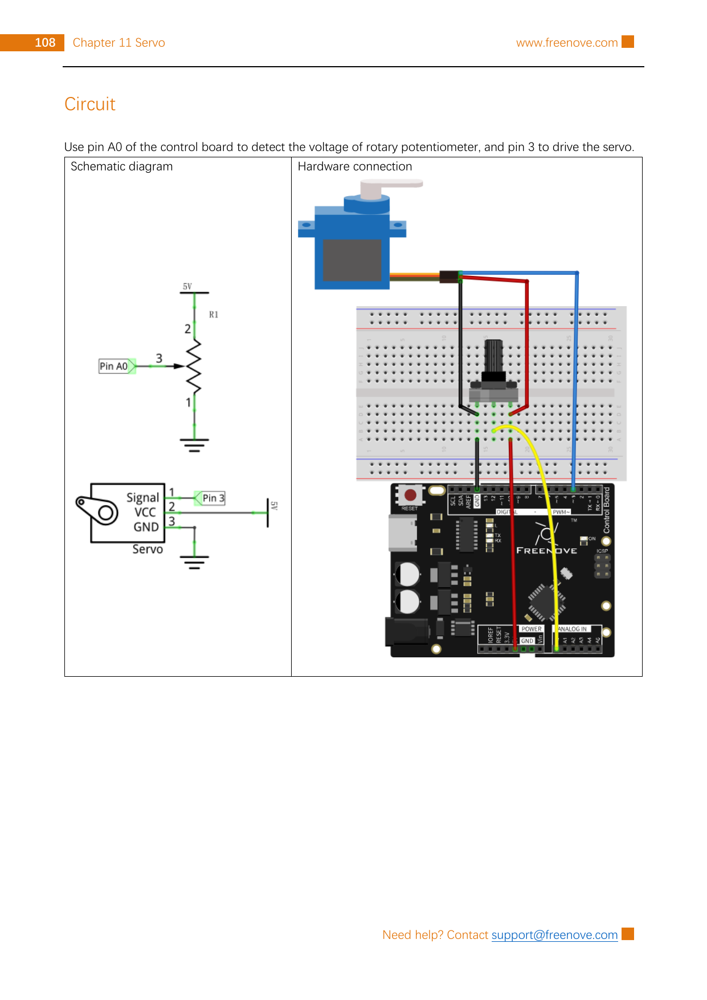

Read a rotary potentiometer on Arduino A0, map its 0–1023 reading to 0–180, and send that angle to a matching standard-position servo on pin 3.
Gather the parts
Uno-compatible control board and USB cable
Breadboard
Rotary potentiometer
Matching small standard-position hobby servo
6 male-to-male jumper wires
Safety boundary: unplug USB before changing wires. Keep the servo horn clear of fingers, hair, sleeves, and objects. Do not force, block, or add a load to the horn. The Freenove source circuit is for its matching small kit servo; lead colours and plug order can differ on another servo, so use that servo’s documentation instead of guessing. Stop and unplug if it gets hot, smells unusual, jitters hard, resets the board, or behaves unexpectedly. Never use wall power, mains wiring, a higher-voltage supply, or an unknown power source.
Build it, one check at a time
Step 1 — Know what will move
A standard-position hobby servo contains a small motor, gears, a position sensor, and a control board. It is different from a continuously spinning DC motor: a changing control signal asks it to move its horn to a position. The matching Freenove servo uses orange for signal, red for VCC, and brown for GND. Check labels and your own component before power is connected.

Reference image: Freenove Ultimate Starter Kit, Tutorial.pdf, Chapter 11, Project 11.2, printed page 108 / PDF page 112. Rasterized unchanged from the permitted source pack under CC BY-NC-SA 3.0; the public tutorial and licence source are linked in Reference pages.
Step 2 — Make the knob a voltage divider
Place the potentiometer so its three terminals are in separate breadboard rows. Connect one outside terminal to 5 V, the other outside terminal to GND, and the centre terminal (the wiper) to Arduino A0 → potentiometer middle pin. The source diagram shows 5 V at one outer terminal, GND at the other, and A0 at the centre. Swapping only the two outer terminals reverses which turning direction means a larger reading; it does not change the safe voltage range.
Do not leave A0 floating. A disconnected analog input can jump around instead of reporting a useful knob position.
Step 3 — Connect the servo exactly
Follow the source’s matching-servo colour code and circuit: Arduino pin 3 → servo signal (orange in the source), 5 V → servo VCC (red), and GND → servo GND (brown). The ground connection is needed so the servo and board share the same electrical reference. Check the signal/VCC/GND labels twice—reversed power connections can damage a servo.
Power and load limit: the pictured Freenove circuit is a one-small-servo kit experiment, not a power design for a mechanism. A servo’s current rises while moving, especially if it is blocked or lifting weight. Arduino’s servo guidance warns that this kind of demand is not safe to draw from an Arduino board for heavier loads or additional servos. For any different, loaded, larger, or multiple-servo project, stop here and use the exact servo specifications plus a correctly rated external low-voltage supply; its ground must be connected to Arduino GND. Do not improvise that power setup from this lesson.
Step 4 — Translate a knob position into an angle
On an Uno, analogRead(A0) gives a 10-bit value from 0 to 1023. map(..., 0, 1023, 0, 180) rescales that reading to an angle request. The Servo library then produces the timing signal; you do not need to make that timing pulse yourself. For the matching source servo, the tutorial describes a roughly 0–180° motion range and a 50 Hz control signal. Other servos can have different travel, so never force the horn past its own stop.
Step 5 — Upload the pointing sketch
Reconnect USB, select your Uno-compatible board and port, then upload this original presentation of the source-validated A0/pin-3 mapping. Turn the potentiometer slowly. The horn should follow; it may not line up exactly with a printed degree marking because real servos and horns have mechanical tolerances. If it strains, chatters, hits an obstruction, becomes hot, or resets the board, unplug USB before inspecting the unplugged wiring and horn clearance.
What you should see: turning the knob changes the requested servo angle. Turning it the other way changes the request the other way. If your direction feels backwards, swap the two outside potentiometer wires only while USB is unplugged; leave A0 on the centre terminal and leave the servo wiring unchanged.
Tiny challenge
Before changing the sketch, predict the result of mapping the knob to 30–150 instead of 0–180. With the same unloaded matching servo, try map(rawReading, 0, 1023, 30, 150). Does the horn now avoid the ends of its travel? Put the source-validated range back when you finish.
The unchanged reference image and upstream material are from Freenove’s Ultimate Starter Kit and are used under CC BY-NC-SA 3.0. Attribution, noncommercial, and ShareAlike requirements apply. The learner-facing instructions and clearly named sketch are original.